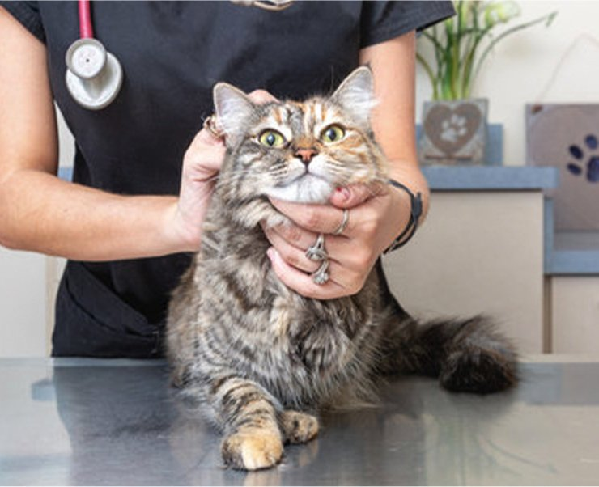

「わたしのネコのクリニック」高輪ゲートウェイ院は、高輪ゲートウェイシティ内の商業施設「ニュウマン高輪」1階に、完全ネコ専門のセンター病院として2026年11月のオープンを予定しています。
猫ちゃんが安心して過ごせる猫専用設計のクリニックとして、街なかでアクセスしやすい立地から、猫とそのご家族の健康を支えてまいります。
COMMITMENTわたしのネコのクリニックのこだわり
FACILITY｜猫ちゃんが安心できる猫専用設計
猫ちゃんが安心して通院できるように、猫ちゃんだけの空間づくりを大切にしています。待合室と診察室は猫ちゃん専用。緊張しやすい猫ちゃんも落ち着けるよう、環境にも配慮した設計を予定しています。

HEALTH CHECK｜猫ちゃんの健康を守る健康診断
猫ちゃんは病気を上手に隠してしまう生き物です。気が付いたら病気が進行していた、ということをできるだけ減らすために、定期的な健康診断を大切にしています。猫ちゃんの健康を飼い主様と一緒に守ります。
アクセス
| 所在地 | 東京都港区高輪2丁目 高輪ゲートウェイシティ「ニュウマン高輪」1階 |
|---|---|
| 最寄駅 | JR山手線・京浜東北線「高輪ゲートウェイ駅」より徒歩1分 都営浅草線・京急本線「泉岳寺駅」より徒歩3分 |
| 開業 | 2026年11月オープン予定 |
診療時間・診療科目・ご予約方法・お電話番号は、開院に向けて準備を進めております。決定次第、当ウェブサイトでご案内いたします。